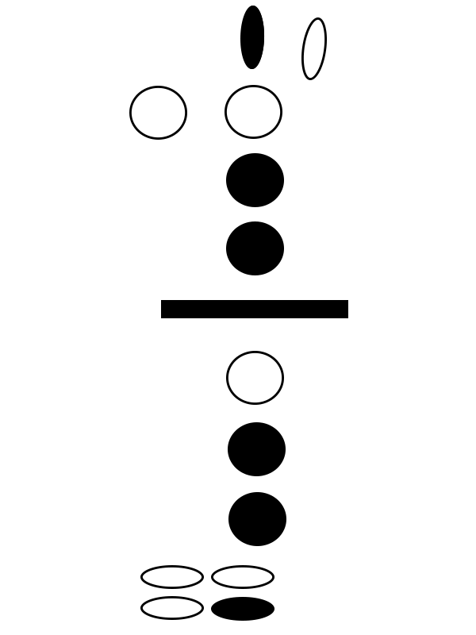
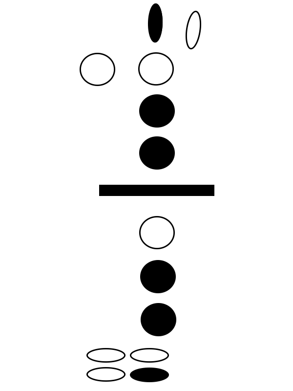

Alto Saxophone Scales
Alto Sax Fingering Chart
EazyTheory is a free resouce website that intends to help and inspire musicans of all ages to pursue their music career with their instrument of choice. This website is divided into three seperate categories for easy access to information. All information is freely used and intended for educational purposes only. Enjoy learning about the Alto Saxophone!
 
